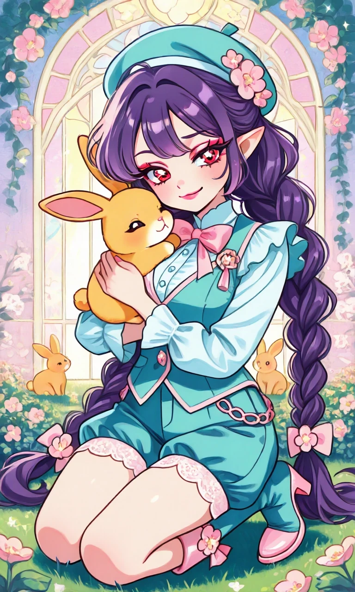
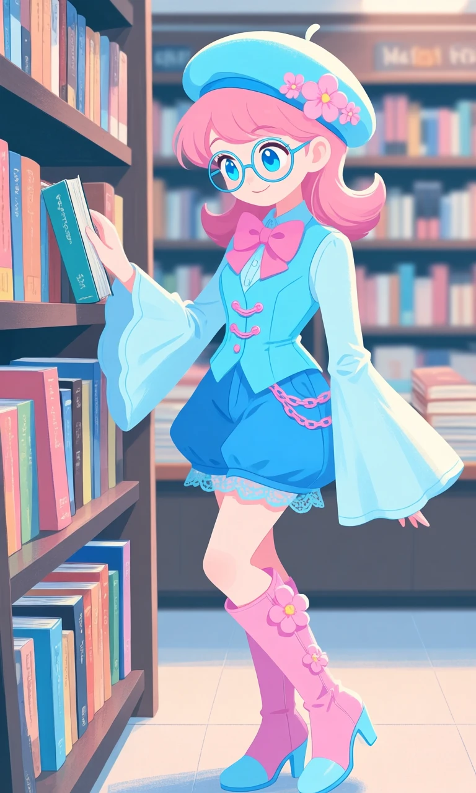

The Skyblue Storyteller

Outfit Prompt
She is wearing a light blue beret with pink flowers on the rim. She is wearing a light blue long sleeve button up collar shirt, the sleeves are tight for 3/4 length with bell sleeves the rest of the way down covering her hands. She is wearing an aqua button vest with pink chains. She has an oversized pink bow tie around her collar. She is wearing baggy blue shorts with lace trim. She has knee high pink and light blue high heel boots with pink flowers on them.
Outfit Examples



